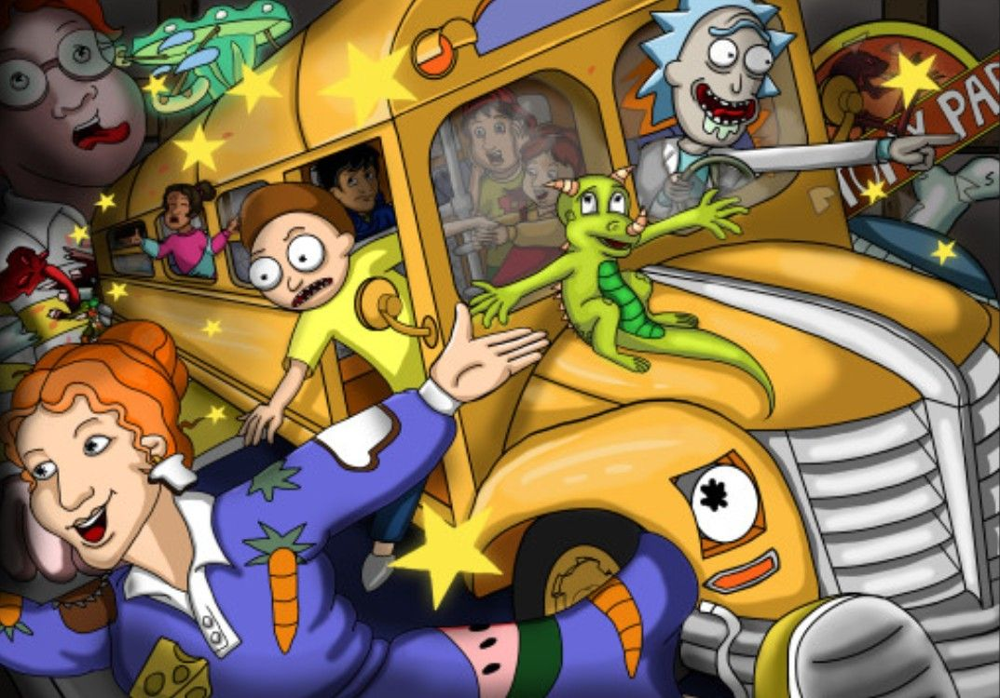
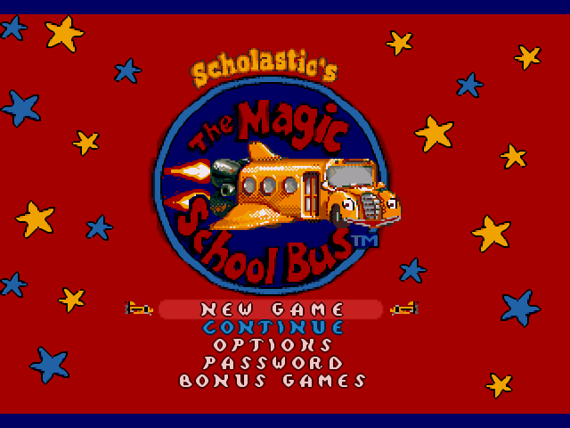

From TV Screens to Iconic Status
Since its debut in the 1990s, The Magic School Bus has become a significant part of pop culture. It has done this through influencing media, education, and even inspiring merchandise and parodies. The show’s unique blend of humor, science, and adventure has earned it a lasting place in the hearts of audiences around the world.The influence of The Magic School Bus extends far beyond the television screen. The show has inspired a wide array of merchandise, including toys, games, books, and clothing, making it a staple in children’s lives. The iconic yellow bus and Ms. Frizzle’s catchphrases have become symbols of curiosity and adventure, frequently referenced in various media.

Parodies and Refrences in Other Media
The Magic School Bus has been referenced and parodied in numerous television shows, movies, and online content. From comedy sketches to animated cameos, the show’s characters and themes have been embraced by creators across different genres.One notable reference to The Magic School Bus in media can be found in the popular animated series Rick and Morty. In the episode titled “A Rickle in Time” (Season 2, Episode 1), Rick, Morty, and Summer use a spaceship that is visually reminiscent of the iconic Magic School Bus. The scene is a clear homage to the show, as the characters embark on a chaotic and surreal journey through time and space, similar to the wild and educational adventures led by Ms. Frizzle. This reference highlights how The Magic School Bus has become a recognizable part of pop culture, even influencing adult-oriented shows like Rick and Morty.These nods to the series highlight its broad cultural impact and enduring appeal.

The Magic Continues Online
In the digital age, The Magic School Bus continues to thrive online. Fans share memories, create fan art, and discuss episodes on social media platforms. The fans really keep the magical spirit alive.Educational websites and apps have also incorporated the series, ensuring that the lessons taught by Ms. Frizzle continue to reach new audiences. Some of these sites are Scholastic, PBS Kids, Nexflix's interactive episodes, and Discovery Education. These platforms leverage the popularity and educational value of The Magic School Bus to provide children with additional learning opportunities beyond the original television episodes.